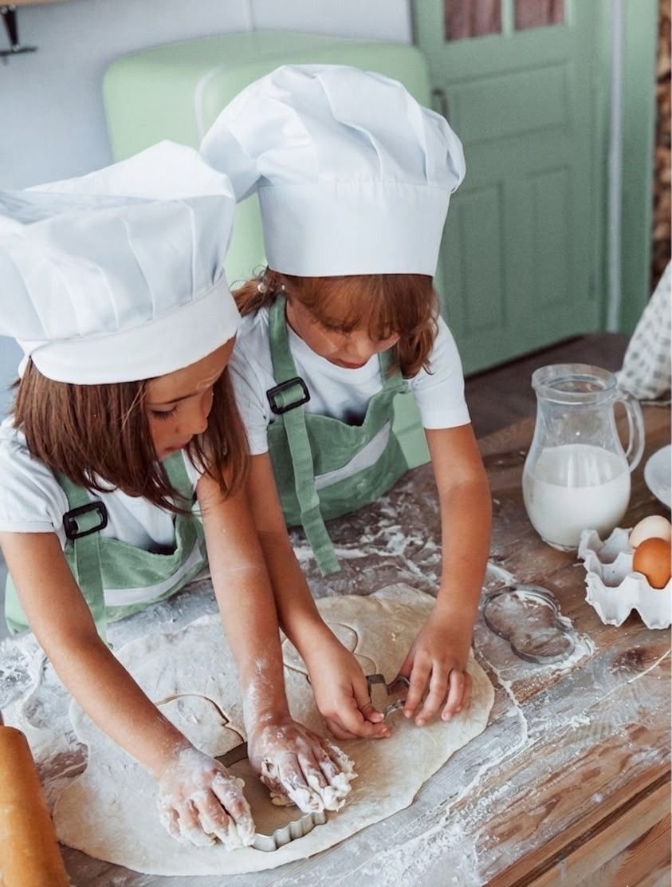

Todo Dia dos Pais é a mesma cena: o almoço lotado, a fila do restaurante e, no fim, ninguém lembra muito da data. E o pior: presentear pai é difícil — geralmente ele "não quer nada". A saída é parar de pensar em objeto e pensar em momento.
Separamos ideias de Dia dos Pais em SP que fogem do almoço de sempre — pra viver junto com ele ou pra presentear com algo que fica na memória.
Programas e presentes pro pai
Gastronomia hands-on
Cozinhar um menu junto com o pai — clima de chef, e o melhor: comer tudo no fim.
Ver gastronomia →
Coquetelaria
Pai que curte um bom drink vai amar montar os próprios com um bartender.
Ver bartenderia →
Cerâmica
Um programa tranquilo e diferente pra desacelerar junto. Rende conversa boa.
Ver cerâmica →
Com as crianças
Elarah Kids: oficinas pra pai e filhos curtirem juntos, longe das telas.
Ver Elarah Kids →
Vale-presente
Não sabe o que ele curte? Dá um vale-experiência e deixa o pai escolher.
Ver presentear →
Ver todas
Explore o catálogo completo e escolha a experiência com a cara do seu pai.
Explorar tudo →Presente que não vira gaveta
O problema do presente de pai é que ele já tem (ou não quer) coisas. Uma experiência resolve: vocês passam um tempo juntos e ele leva a memória, não mais um objeto. Se quiser deixar ele escolher, o vale-presente é a aposta segura. E se o programa for em dupla, vira praticamente um date de pai e filho(a).
Perguntas sobre Dia dos Pais em SP
O que fazer no Dia dos Pais em SP além de almoço?
Uma experiência presencial: aula de gastronomia hands-on, coquetelaria, cerâmica ou um programa em família. Vocês fazem algo juntos em vez de só comer e ir embora.
Qual presente dar pra um pai que não quer nada?
Uma experiência. Em vez de mais um objeto, você dá um momento — uma aula, um jantar hands-on ou um vale-presente pra ele escolher.
Dá pra fazer um programa com as crianças?
Sim. A Elarah Kids tem oficinas pra pais e filhos curtirem juntos.
Bora surpreender o pai?
Conta como ele é que a Elarah sugere a experiência (ou o presente) perfeito pro Dia dos Pais em SP.